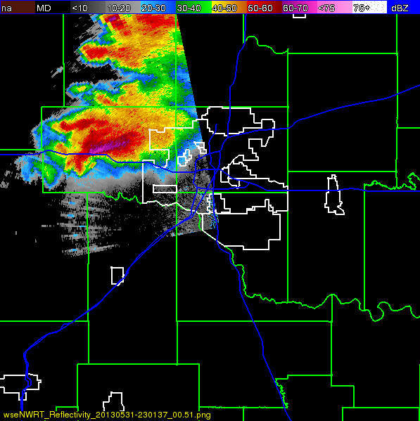

HISTORICAL RADAR / SOURCE COMPARISON
The edge is in the published image.
This is NWRT phased-array reflectivity, with the original dBZ scale. It is not a photograph, a visible funnel outline or a surface wind map. The sharp boundary is already present in the NWS source frame. Atlas has not cropped away echoes or filled empty areas.

wseNWRT_Reflectivity_20130531-230137_00.51.png.What was checked
On September 27, 2026, the NWS GIF was retrieved again. Its SHA-256 matched the retained original. Pillow 12.3.0 decoded the GIF sequentially with frame composition. Each of the 12 published PNGs matched its complete decoded frame pixel for pixel at 597 by 599 pixels. The legend, source label and full image extent were preserved.
The comparison establishes extraction fidelity. It does not turn the image into a georegistered coverage polygon or identify the cause of every blank pixel.
Coverage is part of the measurement
The NWRT instrument could electronically scan a 90 degree azimuth sector, with its pedestal repositioned to follow selected weather. That documented capability makes a sector boundary a plausible explanation for an abrupt echo edge. The exact beam mask and scan commands for this frame have not been recovered. An unobserved area is different from an observed area with weak or absent returns. Priegnitz, Torres and Heinselman, introduction and tracking algorithm.
The printed filename supplies the time label. Atlas interprets it as 23:01:37 UTC, consistent with the NWS chronology, but the label itself does not state a timezone. That interpretation is explicit and is not an independent clock calibration. No exact coverage polygon, elevation interpretation from the filename, or camera registration is inferred.
Source and reuse
NWS event account · Original published GIF · NWS data and product policy.

Credit: NOAA / National Weather Service. Original radar colors are retained. This historical product is not a current warning or forecast. The source imagery is government material under the cited policy, not original Atlas artwork.